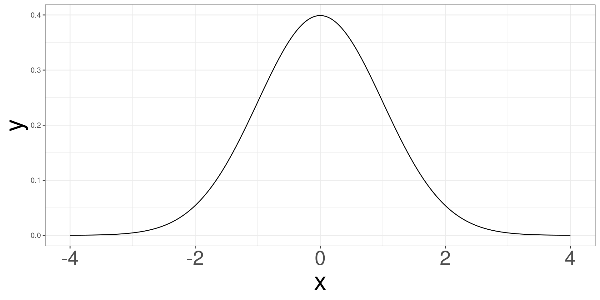
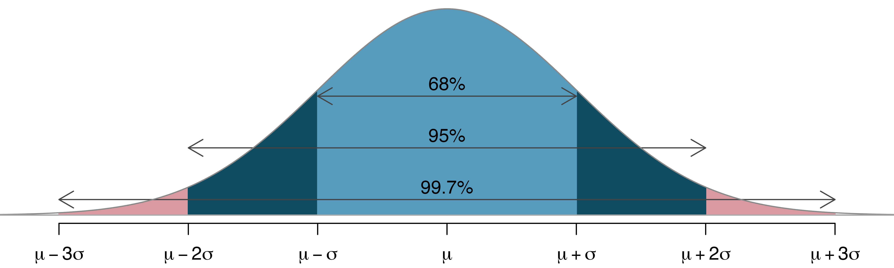

Distribution Functions
2025-02-11
Motivation
Motivation
Normal Distribution
Central Limit Theorem
Inference
Inference in R
Motivation
The bacteria data set contians information on whether bacteria (y: y or n) is present after utilizing treatments (ap: active or placebo).
We are interesting in determine the proportion of having bacteria present is different for those taking an “active” or “placebo”.
Comparing Proportions
We are interesting in determining if different groups see different proportions of a binary outcome.
We compute the proportions of observing the binary outcome in Group 1 and Group 2 and see if they are fundamentally different from each other.
2 by 2 Cross Tabulations
| Groups | Outcome 1 | Outcome 2 |
| Group 1 | \(p_{11}\) | \(p_{21}\) |
| Group 2 | \(p_{12}\) | \(p_{22}\) |
We want to compare \(p_{11}\) and \(p_{12}\), to determine if the probability of outcome 1 are the same for both groups.
Test Statistic
We can use both \(p_{11}\) and \(p_{12}\) to determine if there is a fundamental difference.
However, it will be more beneficial to utilize one statistic to contruct the sampling distribution.
\[ T = \hat p_{11} - \hat p_{12} \]
Obtain Proportions in R
Obtain Difference in R
Bacteria Example
Bacteria Example
Hypotheis Test
We will test the following hypothesis:
\[ H_0:\ \Delta = p_1-p_2 = 0 \]
\[ H_a:\ \Delta = p_1 - p_2 \neq 0 \]
Normal Distribution
Motivation
Normal Distribution
Central Limit Theorem
Inference
Inference in R
Normal Distribution
The Normal Distribution is a probability distribution that is symmetric, with most of the data points clustering around the mean.
- It’s bell-shaped and is defined mathematically by two parameters:
- Mean (\(\mu\)): The center or peak of the distribution.
- Standard Deviation (\(\sigma\)): Controls the spread of the distribution.
Normal Distribution
Properties of the Normal Distribution
- Symmetry: It is perfectly symmetric about the mean, meaning the left side is a mirror image of the right.
- Unimodal: There is a single peak at the mean.
- Mean, Median, and Mode are Equal: In a normal distribution, these three measures of central tendency are located at the same point.
- 68-95-99.7 Rule (Empirical Rule)
Standard Normal Distribution
The Standard Normal Distribution is a special type of normal distribution with a mean of 0 and a standard deviation of 1. It’s often used as a reference to convert any normal distribution to a standard form.
Z-Scores
A Z-score (or standard score) tells us how many standard deviations an individual data point is from the mean. It’s calculated as: \(Z = \frac{X - \mu}{\sigma}\)
- If \(Z\) is positive, the data point is above the mean.
- If \(Z\) is negative, the data point is below the mean.
- Using Z-scores, we can compare values across different normal distributions or find the probability associated with a particular score.
Empirical Rule
The Empirical Rule provides a way to understand the spread of data in a normal distribution by describing how data points cluster around the mean. According to this rule:
- Approximately 68% of data points fall within one standard deviation of the mean.
- Approximately 95% of data points fall within two standard deviations of the mean.
- Approximately 99.7% of data points fall within three standard deviations of the mean.
Empirical Rule and Normal Distribution
In a normal distribution:
68% of data lies between \((\mu - \sigma)\) and \((\mu + \sigma)\).
95% of data lies between \((\mu - 2\sigma)\) and \((\mu + 2\sigma)\).
99.7% of data lies between \((\mu - 3\sigma)\) and \((\mu + 3\sigma)\).
These intervals allow us to estimate probabilities for data within each range without needing to calculate exact probabilities.
Visualizing the Empirical Rule
- The 68% region represents the middle of the curve, starting one standard deviation left of the mean and ending one standard deviation right.
- The 95% region stretches further out, covering almost the entire curve except for the outer tails.
- The 99.7% region includes nearly all data points, covering the entire curve except for a tiny fraction at each extreme.
Empirical Rule
Central Limit Theorem
Motivation
Normal Distribution
Central Limit Theorem
Inference
Inference in R
Central Limit Theorem
What does the Central Limit Theorem (CLT) actually tell us?
The CLT states that:
- If you take a sufficiently large number of samples from any population, the distribution of the sample means will be approximately normal.
- This approximation holds no matter the shape of the original population distribution (it could be normal, skewed, bimodal, etc.).
- The mean of this sampling distribution will be equal to the population mean.
- The standard deviation of this sampling distribution (often called the standard error) will be the population standard deviation divided by the square root of the sample size, ( _{} = ).
Why the Central Limit Theorem is Important
The CLT is powerful for several reasons:
- Predicting Sample Outcomes: Since we know the distribution of sample means will be approximately normal, we can make predictions about future samples.
- Confidence Intervals and Hypothesis Testing: The normal distribution of sample means allows us to estimate population parameters (like the mean) with confidence and test hypotheses even if the population itself isn’t normally distributed.
- Practical Applications in Various Fields: From quality control in manufacturing to political polling and medicine, the CLT lets us make inferences about population characteristics based on sample data.
Inference
Motivation
Normal Distribution
Central Limit Theorem
Inference
Inference in R
Using Mathematical Models
The inferential procedures, such as computing the p-value or confidence interval, can be constructed with mathematical models.
Advantages
- Mathematical Models have been widely studied and implemented in several software packages.
- These are not computationally intensive
- Can work with smaller data set and provide more reliable results
Disadvantages
- If the mathematical model is wrong, results may be invalid.
- Difficult to know what are the true mathematical models.
Inference in R
Motivation
Normal Distribution
Central Limit Theorem
Inference
Inference in R
Inference in R
\[ H_0:\ \Delta = p_1-p_2 = 0 \]
\[ H_a:\ \Delta = p_1 - p_2 \neq 0 \]
Proportions Test
Descriptives
Proportions Test in R
#>
#> 2-sample test for equality of proportions with continuity correction
#>
#> data: c(93, 84) out of c(124, 96)
#> X-squared = 4.6109, df = 1, p-value = 0.03177
#> alternative hypothesis: two.sided
#> 95 percent confidence interval:
#> -0.23516294 -0.01483706
#> sample estimates:
#> prop 1 prop 2
#> 0.750 0.875